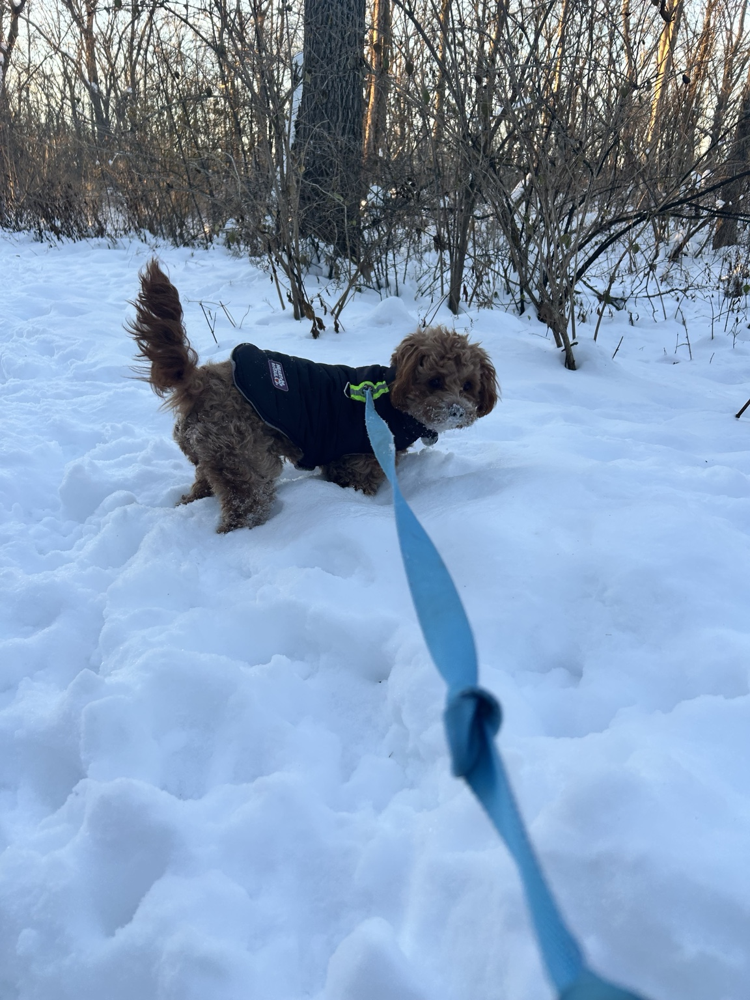

Because every season has something worth looking forward to.

One of our favorite things about living in Wisconsin is how every season brings something new to experience. From spring flowers to cozy holiday traditions, these are the places and events that help us make memories throughout the year.
No matter the season, there is always another adventure waiting just around the corner.
As winter fades away, botanical gardens and tulip displays are some of the best places to welcome the new season. Cooler temperatures also make spring one of the nicest times of year for longer walks.
Few Wisconsin traditions are as iconic as visiting an apple orchard in the fall. Fresh cider, bakery treats, and crisp autumn air make orchards one of our favorite seasonal outings.
Bundle up, grab a warm drink, and enjoy one of Wisconsin's many holiday light displays. Walking through festive lights is a simple tradition that makes the winter season feel special.
Find seasonal festivals and events throughout Wisconsin by visiting Travel Wisconsin Events .